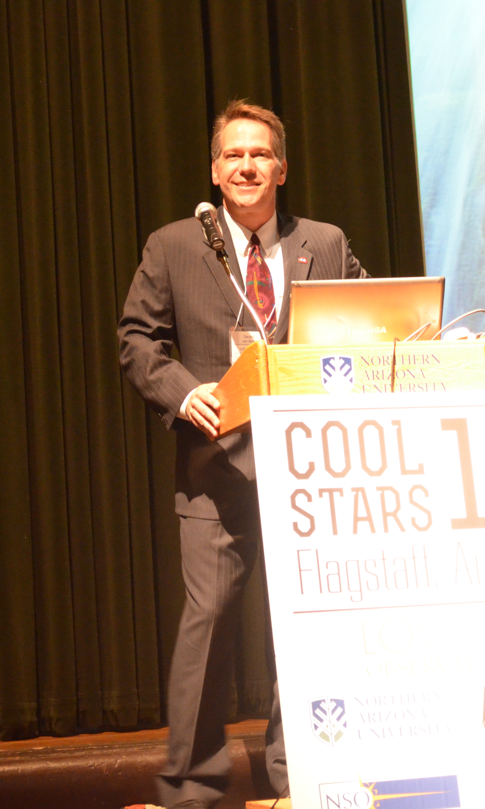

Image Gallery for Dr. Gerard van Belle
Dr. van Belle
On the observing platform at ESO's facility on Cerro Paranal in Chile.
Watching the sunset on Paranal - ready for observing.
An airplane preflight at El Monte field.
The weekly "Stars of Mars Hill" radio show on KAFF.

Leading opening ceremonies for Cool Stars 18.